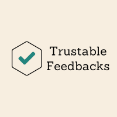

Projetos
O ScaneIA é um aplicativo que digitaliza as planilhas de uma indústria, faz
análises e dashboards em cima dessas informações. Como co-fundador do ScaneIA, fui responsavel por fazer
a área do RH no site, parte responsável por gerir o acesso das pessoas no aplicativo.
Github: https://github.com/ScaneIA
A Trustable Feedback é um projeto que visa classificar comentários e avaliações
entre justos ou injustos. É um web service hospedado no render, conta com sua API feita em spring boot
para gerir os tokens, histórico de classificação e informações da empresa. Para a IA, foi usado uma
biblioteca em Python chamada TensorFlow, com dataset com mais de 10 mil dados.
Github: https://github.com/Trustable-Feedbacks
